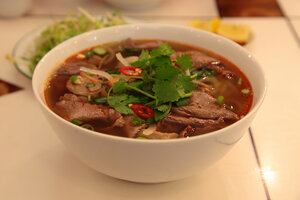

Giới thiệu

Bún bò là một trong những đặc sản của xứ Huế, mặc dù món bún này phổ biến trên cả ba miền ở Việt Nam và cả người Việt tại hải ngoại. Tại Huế, món này được gọi đơn giản là "bún bò" hoặc gọi cụ thể hơn là "bún bò thịt bò". Các địa phương khác gọi là "bún bò Huế", "bún bò gốc Huế" để chỉ xuất xứ của món ăn này. Món ăn có nguyên liệu chính là bún, thịt bắp bò, giò heo, cùng nước dùng có màu đỏ đặc trưng và vị sả và ruốc. Đôi khi tô bún còn được thêm vào thịt bò tái, chả cua, và các loại nguyên liệu khác tùy theo sở thích của người nấu.
Trong nước dùng của bún, người Huế thường nêm vào một ít mắm ruốc, góp phần làm nên hương vị rất riêng của nồi bún bò Huế. Sau khi xương bò được hầm chín tới, người ta thường thêm vào một ít chả heo hay chả cua được quết nhuyễn. Thịt bò có thể được cắt mỏng, nhúng vào nước dùng đang sôi trước khi cho vào tô bún (gọi là thịt bò tái). Người ta cũng thường cho thêm một ít ớt bột và gia vị vào tô bún rồi ăn với rau sống gồm giá, rau thơm, xà lách, rau cải con, bắp chuối cắt nhỏ.
(Nguồn:Wikipedia)